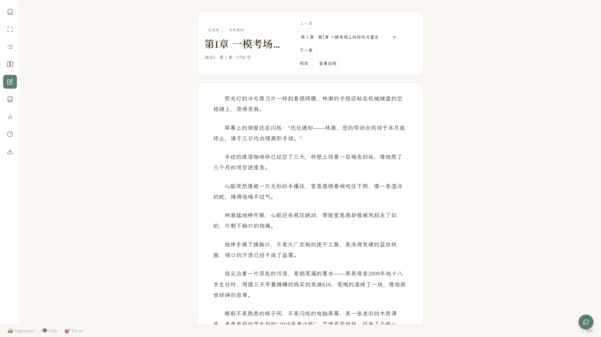
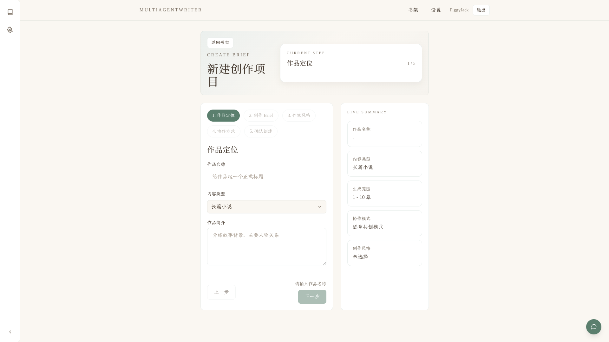
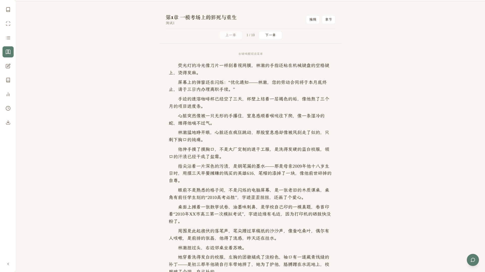
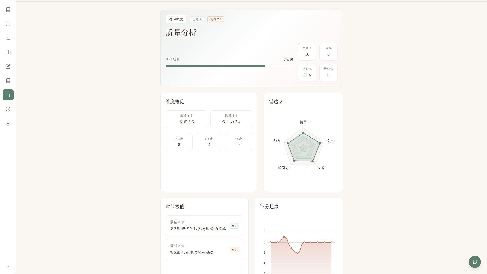
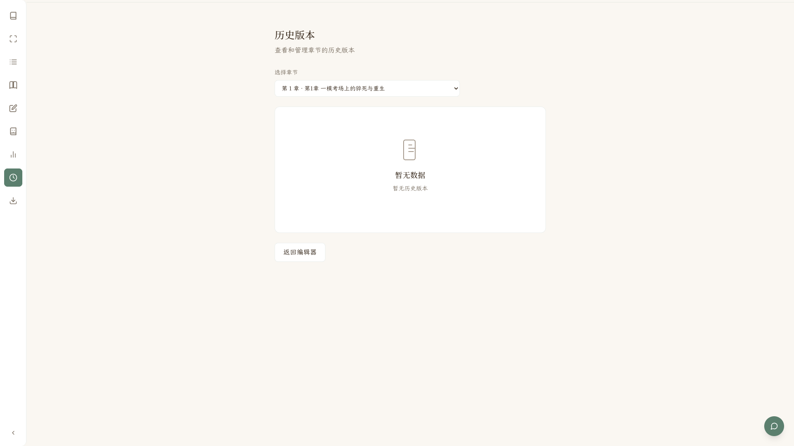
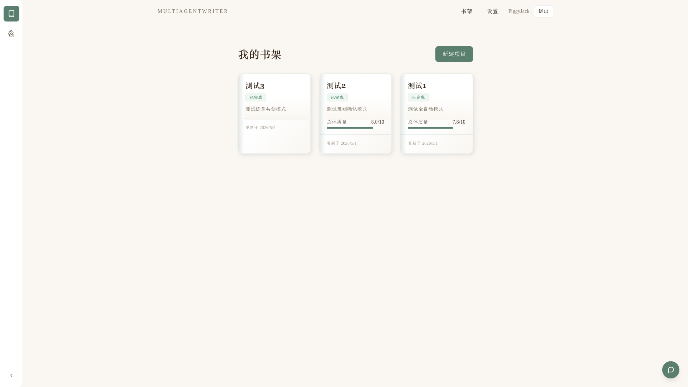
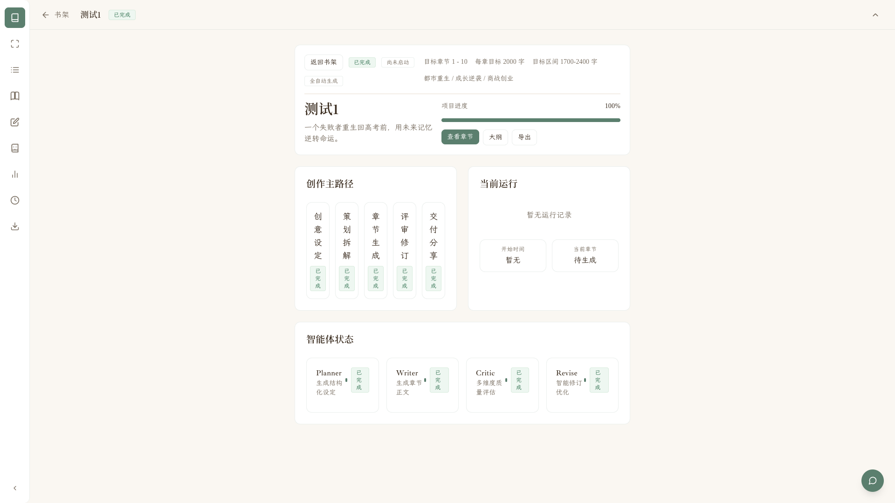
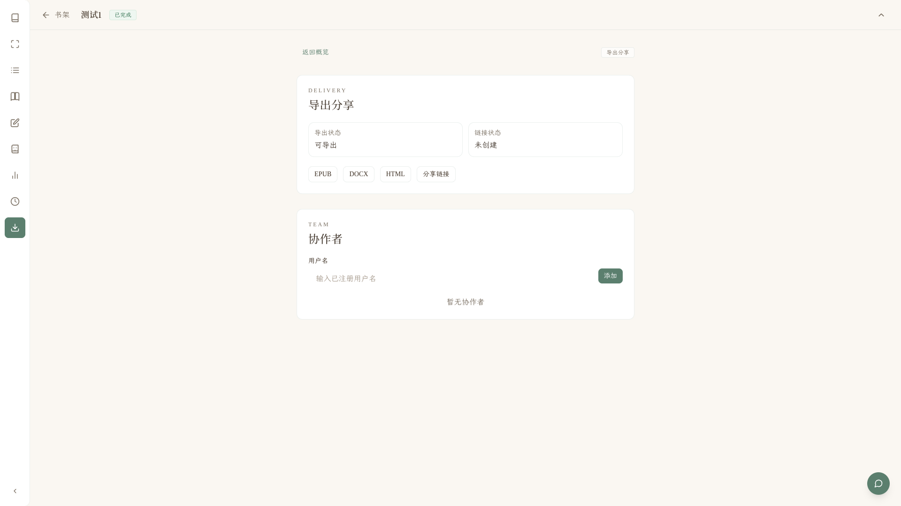

创建配置
新建项目不再重复填写项目名和小说名，改为围绕作品本身填写类型、题材、Brief、章节范围、目标字数和 Skill。
Personal Contribution
我负责的核心工作集中在创作工作流、作家风格 Skill 注入、字数与质量控制、前端创作体验，以及最终 Demo 表达。目标不是让系统“能生成”，而是让它能被稳定演示、被用户理解、被创作者顺手使用。





Workflow
我重点修正和完善了当前系统最核心的小说创作流程：让策划确认和逐章共创真的能停下来、等用户看、带反馈继续，而不是生成一章就错误完成。
新建项目不再重复填写项目名和小说名，改为围绕作品本身填写类型、题材、Brief、章节范围、目标字数和 Skill。
Planner 输出设定圣经和大纲后进入确认态，用户可以通过或驳回重策划，避免跳过关键规划。
按章节范围推进，生成第 N 章后保存内容、评分、产物，再进入人工确认，不会直接标记完成。
章节不通过时，用户反馈被保存为 FeedbackItem 和反馈文件，下一轮任务读取后重写当前章节。
Critic 评分、系统防护、字数检测共同决定是否通过；问题进入定向修订，而不是简单重写全文。
生成完成后可在阅读器、编辑器、质量分析、导出分享之间流转，形成可演示的完整产品路径。
Product Experience
除了后端流程，我还集中修正了前端信息架构和交互体验：创建项目、Skill 选择、阅读器、编辑器、章节切换、确认弹窗、历史版本和主题细节。
创建项目时就能选择作家风格，并限制主作家风格只能选择一个。它作为 Writer / Reviser 的风格主线，而不是多个风格同时争夺文风。
补齐“目标字数不是参考值”的工程约束：按章节生成预算拍点，生成后检测 85%-120% 区间，并触发定向扩写或压缩。
补齐阅读器，修复编辑器无法打开、章节切换缺失、文本不分段、左侧导航和确认体验不顺等问题。编辑器支持 AI 选区润色，阅读器支持更沉浸的分页阅读。
每次章节编辑自动保存版本，支持对比和恢复。恢复前检查生成任务状态，避免正在生成时回滚造成数据冲突。
修复浅色、深色、Deep Dark 下的状态标签、按钮、文本对比度和导航收起问题，让演示时视觉一致且不再出现白底白字。

Module Spotlight
这一部分适合现场讲解：点击左侧模块，可以切换对应负责内容、产出价值和 Demo 展示点。
让系统真正按“策划确认 → 逐章生成 → 人工确认 → 带反馈继续”的流程运转，解决生成一章就完成、章节确认跳错页面等关键问题。

生成流程容易跳步，章节确认和任务状态不同步。
补齐 waiting_confirm 状态、确认弹窗、反馈落库和 continue task。
Demo 可稳定展示，用户能真实参与每一章的共创。
Code Evidence
这里展示的是我负责模块的核心实现片段。代码只摘关键部分，完整文件可在项目仓库中查看。
except WaitingForConfirmationError as e:
sync_chapter_file_to_db(..., status="generated")
record_chapter_draft_artifact(..., source="agent")
task_record.status = "waiting_confirm"
task_record.current_step = f"第{e.chapter_index}章生成完成，等待你审阅确认"
task_record.current_chapter = e.chapter_index
update_workflow_run_status(
task_status="waiting_confirm",
current_step_key="waiting_confirm",
)selected_author_style = False
for entry in self._enabled_skill_entries(project_config):
skill = self.registry.load_skill(skill_id)
if is_author_style_skill(skill):
if selected_author_style:
continue
selected_author_style = True
trimmed = strength_trimmer.trim_by_strength(raw_content, strength=strength)
rendered = safety_filter.filter_unsafe_content(trimmed, mode=mode)def evaluate(self, content: str, target_word_count: int):
actual = count_story_words(content)
min_count, max_count = self.target_range(target_word_count)
if actual < min_count:
return under_target_issue
if actual > max_count:
return over_target_issue
return passedreturn {
"artifact_type": "budgeted_scene_plan",
"chapter_index": int(chapter_index),
"target_word_count": int(target_word_count),
"min_word_count": min_word_count,
"max_word_count": max_word_count,
"beats": beats,
}export const RewriteMode = {
POLISH: 'polish',
EXPAND: 'expand',
SHORTEN: 'shorten',
MORE_DRAMATIC: 'more_dramatic',
} as const
parts.push(`需要修改的文本：`)
parts.push(`"${ctx.selectedText}"`)
parts.push(`要求：${modeInstructions[ctx.mode]}`)running_task = db.query(GenerationTask).filter(
GenerationTask.project_id == project_id,
GenerationTask.status.in_(ACTIVE_TASK_STATUSES),
GenerationTask.current_chapter == chapter_index,
).first()
if running_task:
raise HTTPException(status_code=409)
chapter.content = version.content
chapter.status = "edited"Demo Video
最终 Demo 不只是录屏拼接，而是用 Remotion 重新组织真实 UI 素材：产品镜头、鼠标运动、局部放大、节奏压缩和视觉一致性，让评委先感受到“这是一个完整产品”，再理解背后的多智能体工作流。

Contribution Boundary
小组项目展示里，最好既体现整体协作，也准确说明个人贡献。本页刻意把“项目整体能力”和“个人负责成果”分开，避免把队友工作写到自己名下。
包括逐章共创、策划确认、Skill 注入、字数控制、阅读器、编辑器、AI 选区润色、历史版本、主题细节和 Demo 视频表达。
Hermes 是项目非常重要的创新方向，但不放入本页个人负责模块。讲解时可以作为系统未来成长能力提及，而不是作为我的个人代码亮点。
每个模块都对应竞赛评分维度：完整闭环、Demo 稳定、AI 使用深度、创新表达和工程可维护性。